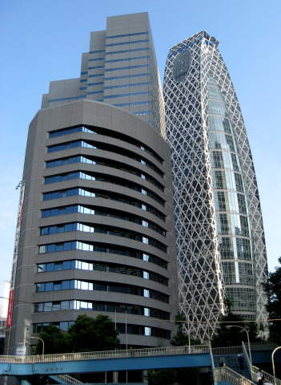
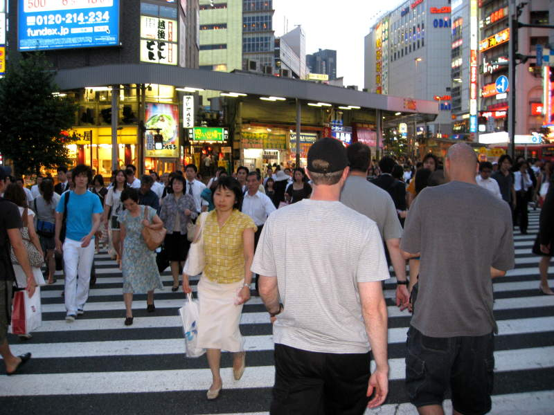
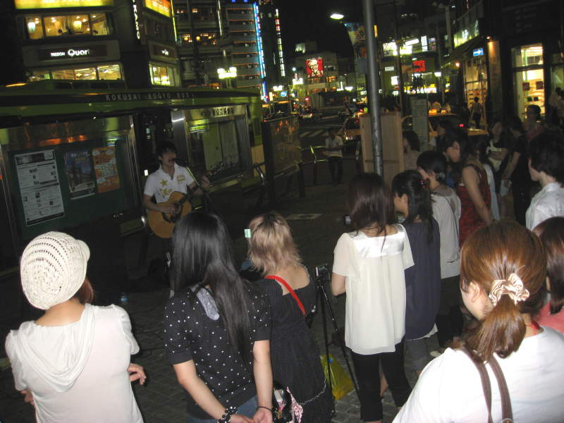
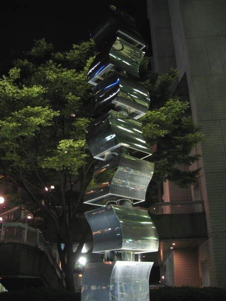
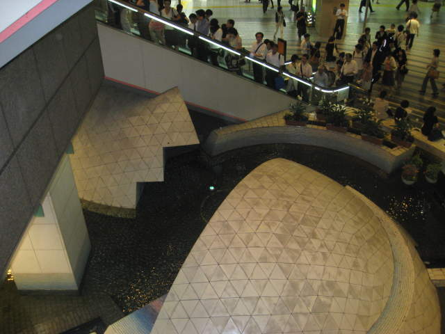

Shinjuku

More flashy buildings. I wonder if the building on the right is more stable during the spring equinox.

Navigating through the crowds was not difficult for us tall people.

Lots of street performers all around Tokyo.

This probably doesn't look as nice during the day. Since I only have this picture, you'll never know.

This
was some escalator in some convention center. I appreciate the
sculpture though. I didn't realize there were coins in the water
down there, but I can see them in this picture. It would have
been fun to bounce the coins off the artwork from the second level.
Missed opportunity.
Back